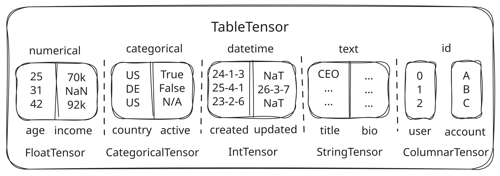
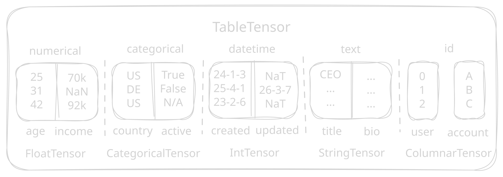

Table Semantics#
Structured data models operate on heterogeneous tables across all kinds of data modalities: numerical values, categories, timestamps, free-form text, identifiers, and missing values.
Even within one modality, values may have different physical types, e.g., strings, integers, or booleans can all represent categorical data.
Traditionally, converting such tables into numeric model inputs was left to the user.
The sdm.tensor package makes that conversion natural, PyTorch-native, and GPU-ready.
It provides a bridge from dataframe-like data to tensorized representations that preserve table semantics at the boundary while exposing tensor-shaped, device-aware objects inside the model.
The main entry point is the TableTensor class.
It is a lossless, row-major tensor subclass for structured data, in which columnar data is grouped in blocks by their semantic type (e.g., numerical, categorical, datetime, text).
The last dimension refers to the named column dimension C, while preceding dimensions can represent row, batch, or example dimensions.
This makes a table look like a tensor of shape [..., C] without flattening all columns into one dense array of a single data type.
In particular, it is
dataframe-like at the boundary: construct from
pandas,arrow, orcudfvia zero-copy buffer views, and convert back when needed.PyTorch-native in the middle: use familiar operations such as
to(),view(),unsqueeze(), indexing, slicing,torch.cat(), andtorch.stack(), with fast device movement and efficient transfer to accelerators.lossless: column names, semantic types, categorical vocabularies, string values, and missing values are fully preserved.
The Tensor Stack#
The sdm.tensor package is layered from low-level tensor subclasses to full table schemas.
Each subclass supports multi-dimensional shapes and strides, and preserves standard PyTorch ergonomics (e.g., zero-copy views and slicing):
VarLenTensor: A tensor whose logical elements have variable-length payloads, e.g. for multi-categorical data.StringTensor: A specializedVarLenTensorfor representing UTF-8 strings.NullableTensor: A tensor for nullable integer or boolean values.CategoricalTensor: A tensor for representing categorical values via integer codes together with their mapping to original values. Category mappings can be ordinarytorch.Tensorinstances or subclasses of it, e.g.,StringTensor.TableTensor: Combines the tensor types above into a lossless table representation whose columns are grouped by semantic type. It is the main user-facing interface for model inputs and outputs.
Working with TableTensor#
A TableTensor currently supports the following semantic types:
numerical: continuous or real-valued inputs stored as atorch.Tensor.categorical: discrete values stored as aCategoricalTensor.datetime: timestamps stored as an integertorch.Tensorcontaining Unix timestamps in microseconds.text: free-form strings stored asStringTensor.id: identifier columns (e.g., primary keys or foreign keys) represented as aColumnarTensorwith heterogeneous columns backed bytorch.Tensor,StringTensororNullableTensor.
{kind=link}

{kind=link}

A TableTensor can be created manually from tensor blocks or converted from pandas, arrow, or cudf dataframes.
In addition to the dataframe itself, each column must be assigned a semantic type; use infer_stypes() to infer semantic types automatically:
import sdm
import torch
import pandas as pd
df = pd.DataFrame(
{
"age": [25, 31, 42],
"income": [70_000.0, 105_000.0, 92_000.0],
"country": ["US", "DE", "US"],
"title": ["analyst", "engineer", "manager"],
"user_id": [101, 102, 103],
}
)
table = sdm.TableTensor.from_pandas(
df,
stypes={
"age": "numerical",
"income": "numerical",
"country": "categorical",
"title": "text",
"user_id": "id",
},
)
print(table.size())
# torch.Size([3, 5])
print(table.columns)
# {
# Stype.numerical: ("age", "income"),
# Stype.categorical: ("country",),
# Stype.datetime: (),
# Stype.text: ("title",),
# Stype.id: ("user_id",),
# }
print(table.numerical.size())
# torch.Size([3, 2])
print(table.categorical.code)
# tensor([[0],
# [1],
# [0]])
print(table.categorical.categories[0].tolist())
# ["US", "DE"]
Note
The mapping from categories to integer codes is not a stable API guarantee and may depend on the input data or backend.
For fully deterministic category mappings, align categories at the processing level via AlignCategories.
Column Semantics#
Because columns are stored in semantic blocks, TableTensor does not treat the original dataframe column order as a stable invariant.
Prefer column-name selection over positional assumptions.
Otherwise, PyTorch syntactic sugar is fully preserved.
Rows and batch dimensions behave like PyTorch tensor dimensions.
You can slice, index, reshape, stack, concatenate, and move tables between devices.
print(table[["age", "country"]].size())
# torch.Size([3, 2])
print(table[:2].size())
# torch.Size([2, 5])
print(table.unsqueeze(0).expand(2, -1, -1).size())
# torch.Size([2, 3, 5])
print(torch.cat([table, table], dim=0).size())
# torch.Size([6, 5])
print(torch.cat([table[["age"]], table[["country"]]], dim=-1).size())
# torch.Size([3, 2])
However, operations that would destroy column semantics are rejected. For example, raw integer indexing into the column dimension is not allowed:
table[..., 0] # RuntimeError: can't select the column dimension
Device movement follows the usual PyTorch style:
print(table.to("cuda").device)
# cuda:0
Round-Tripping#
A TableTensor is intended to sit between dataframe interfaces and model code.
You can zero-copy back to pandas or arrow when you want to leave the tensorized runtime:
df = table.to_arrow()
df = table.to_pandas()
On CUDA, cudf can be used as the dataframe boundary:
df = table.to_cudf()
Model Inputs And Outputs#
A TableTensor acts as the primary abstraction for model inputs and outputs, and flows through GPU-accelerated preprocessing and ensembling.
You can learn more about data processing and model execution in the Data Processing and In-Context Learning Model Interface guides.